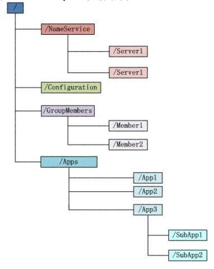
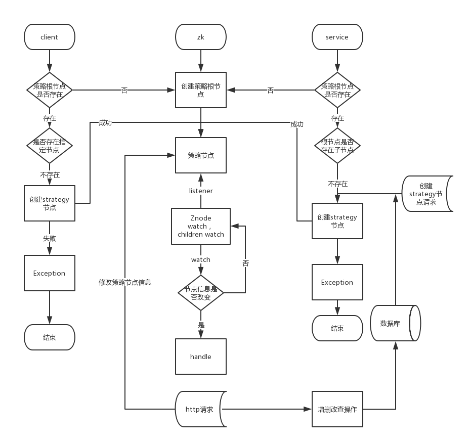

概述
目前进入一家，做仓库存储的公司，公司使用的技术也都是现在使用比较多的。以下只是个人记录，不做任何商业用途。
Dubbo
关于Dubbo，网上的资料很多，我也都看了很多，林林丛丛的都是对Dubbo技术的介绍，Dubbo用起来很简单，基本上就是配置配置xml文件。这里就不在介绍Dubbo怎么使用了。
我对Dubbo主要的疑虑主要有以下几点：
- RPC原理是什么?
- 为什么Dubbo可以达到调用远程服务的目的？
- Dubbo为什么能够实现软负载均衡，服务注册与发现的？
不过想要解决这些疑问，需要研究源码。因为对Dubbo涉及到的部分技术还有很多不是特别懂，暂时没有看源码。这部分技术分享暂时不做，等我看完源码再好好分享。
Zookeeper
Zookeeper的简介
ZooKeeper数据模型的结构与Unix文件系统很类似，整体上可以看作是一棵树，每个节点称做一个ZNode。每个ZNode都可以通过其路径唯一标识，在每个ZNode上可存储少量数据(默认是1M, 可以通过配置修改,通常不建议在ZNode上存储大量的数据)。另外，每个ZNode上还存储了其Acl信息，这里需要注意，虽说ZNode的树形结构跟Unix文件系统很类似，但是其Acl与Unix文件系统是完全不同的，每个ZNode的Acl是独立的，子结点不会继承父结点的。

ZNode根据其本身的特性，可以分为下面两类：
- Regular ZNode: 常规型ZNode, 用户需要显式的创建、删除
- Ephemeral ZNode: 临时型ZNode,用户创建它之后，可以显式的删除，也可以在创建它的Session结束后，由ZooKeeper Server自动删除
Zookeeper这种数据结构有如下这些特点：
1）每个子目录项如NameService都被称作为znode，这个znode是被它所在的路径唯一标识，如Server1这个znode的标识为/NameService/Server1。
2）znode可以有子节点目录，并且每个znode可以存储数据，注意EPHEMERAL（临时的）类型的目录节点不能有子节点目录。ZNode一个Sequential的特性，如果创建的时候指定的话，该ZNode的名字后面会自动Append一个不断增加的SequenceNo。
3）znode是有版本的（version），每个znode中存储的数据可以有多个版本，也就是一个访问路径中可以存储多份数据，version号自动增加。
4）znode可以是临时节点（EPHEMERAL），可以是持久节点（PERSISTENT）。如果创建的是临时节点，一旦创建这个EPHEMERALznode的客户端与服务器失去联系，这个znode也将自动删除，Zookeeper的客户端和服务器通信采用长连接方式，每个客户端和服务器通过心跳来保持连接，这个连接状态称为session，如果znode是临时节点，这个session失效，znode也就删除了。
5）znode的目录名可以自动编号，如App1已经存在，再创建的话，将会自动命名为App2。
6）znode可以被监控，包括这个目录节点中存储的数据的修改，子节点目录的变化等，一旦变化可以通知设置监控的客户端，这个是Zookeeper的核心特性，Zookeeper的很多功能都是基于这个特性实现的。Watcher ZooKeeper支持一种Watch操作，Client可以在某个ZNode上设置一个Watcher，来Watch该ZNode上的变化。如果该ZNode上有相应的变化，就会触发这个Watcher，把相应的事件通知给设置Watcher的Client。需要注意的是，ZooKeeper中的Watcher是一次性的，即触发一次就会被取消，如果想继续Watch的话，需要客户端重新设置Watcher。这个跟epoll里的oneshot模式有点类似。
7）ZXID：每次对Zookeeper的状态的改变都会产生一个zxid（ZooKeeper Transaction Id），zxid是全局有序的，如果zxid1小于zxid2，则zxid1在zxid2之前发生。
8)Session: Client与ZooKeeper之间的通信，需要创建一个Session，这个Session会有一个超时时间。因为ZooKeeper集群会把Client的Session信息持久化，所以在Session没超时之前，Client与ZooKeeper Server的连接可以在各个ZooKeeper Server之间透明地移动。在实际的应用中，如果Client与Server之间的通信足够频繁，Session的维护就不需要其它额外的消息了。否则，ZooKeeper Client会每t/3 ms发一次心跳给Server，如果Client 2t/3 ms没收到来自Server的心跳回应，就会换到一个新的ZooKeeper Server上。这里t是用户配置的Session的超时时间。
Zookeeper的结构
如下图：


client不论连接到哪个Server，展示给它都是同一个视图，这是zookeeper最重要的性能。
ZooKeeper Watch
Zookeeper watch是一种监听通知机制。Zookeeper所有的读操作getData(), getChildren()和 exists()都可以设置监视(watch)，监视事件可以理解为一次性的触发器，官方定义如下：a watch event is one-time trigger, sent to the client that set the watch, whichoccurs when the data for which the watch was set changes。
Watch的三个关键点：
（一次性触发）One-time trigger
当设置监视的数据发生改变时，该监视事件会被发送到客户端，例如，如果客户端调用了getData(“/znode1”, true) 并且稍后 /znode1 节点上的数据发生了改变或者被删除了，客户端将会获取到 /znode1 发生变化的监视事件，而如果 /znode1 再一次发生了变化，除非客户端再次对/znode1 设置监视，否则客户端不会收到事件通知。
（发送至客户端）Sent to the client
Zookeeper客户端和服务端是通过 socket 进行通信的，由于网络存在故障， 所以监视事件很有可能不会成功地到达客户端，监视事件是异步发送至监视者的，Zookeeper 本身提供了顺序保证(ordering guarantee)：即客户端只有首先看到了监视事件后，才会感知到它所设置监视的znode发生了变化。网络延迟或者其他因素可能导致不同的客户端在不同的时刻感知某一监视事件，但是不同的客户端所看到的一切具有一致的顺序。
（被设置 watch 的数据）The data for which the watch was set
这意味着znode节点本身具有不同的改变方式。你也可以想象 Zookeeper 维护了两条监视链表：数据监视和子节点监视(data watches and child watches) getData() 和exists()设置数据监视，getChildren()设置子节点监视。或者你也可以想象 Zookeeper 设置的不同监视返回不同的数据，getData() 和 exists() 返回znode节点的相关信息，而getChildren() 返回子节点列表。因此，setData() 会触发设置在某一节点上所设置的数据监视（假定数据设置成功），而一次成功的create() 操作则会出发当前节点上所设置的数据监视以及父节点的子节点监视。一次成功的 delete操作将会触发当前节点的数据监视和子节点监视事件，同时也会触发该节点父节点的child watch。
Zookeeper 中的监视是轻量级的，因此容易设置、维护和分发。当客户端与 Zookeeper 服务器失去联系时，客户端并不会收到监视事件的通知，只有当客户端重新连接后，若在必要的情况下，以前注册的监视会重新被注册并触发，对于开发人员来说这通常是透明的。只有一种情况会导致监视事件的丢失，即：通过exists()设置了某个znode节点的监视，但是如果某个客户端在此znode节点被创建和删除的时间间隔内与zookeeper服务器失去了联系，该客户端即使稍后重新连接 zookeeper服务器后也得不到事件通知。
ZooKeeper的工作原理
在zookeeper的集群中，各个节点共有下面3种角色和4种状态：
- 角色：leader,follower,observer
- 状态：leading,following,observing,looking
Zookeeper的核心是原子广播，这个机制保证了各个Server之间的同步。实现这个机制的协议叫做Zab协议（ZooKeeper Atomic Broadcast protocol）。Zab协议有两种模式，它们分别是恢复模式（Recovery选主）和广播模式（Broadcast同步）。当服务启动或者在领导者崩溃后，Zab就进入了恢复模式，当领导者被选举出来，且大多数Server完成了和leader的状态同步以后，恢复模式就结束了。状态同步保证了leader和Server具有相同的系统状态。
为了保证事务的顺序一致性，zookeeper采用了递增的事务id号（zxid）来标识事务。所有的提议（proposal）都在被提出的时候加上了zxid。实现中zxid是一个64位的数字，它高32位是epoch用来标识leader关系是否改变，每次一个leader被选出来，它都会有一个新的epoch，标识当前属于那个leader的统治时期。低32位用于递增计数。
每个Server在工作过程中有4种状态：
- LOOKING：当前Server不知道leader是谁，正在搜寻。
- LEADING：当前Server即为选举出来的leader。
- FOLLOWING：leader已经选举出来，当前Server与之同步。
- OBSERVING：observer的行为在大多数情况下与follower完全一致，但是他们不参加选举和投票，而仅仅接受(observing)选举和投票的结果。
Zookeeper的典型应用场景
参考：阿里中间件博客
数据发布与订阅（配置中心）
发布与订阅模型，即所谓的配置中心，顾名思义就是发布者将数据发布到ZK节点上，供订阅者动态获取数据，实现配置信息的集中式管理和动态更新。例如全局的配置信息，服务式服务框架的服务地址列表等就非常适合使用。
应用中用到的一些配置信息放到ZK上进行集中管理。这类场景通常是这样：应用在启动的时候会主动来获取一次配置，同时，在节点上注册一个Watcher，这样一来，以后每次配置有更新的时候，都会实时通知到订阅的客户端，从来达到获取最新配置信息的目的。 分布式搜索服务中，索引的元信息和服务器集群机器的节点状态存放在ZK的一些指定节点，供各个客户端订阅使用。
分布式日志收集系统。这个系统的核心工作是收集分布在不同机器的日志。收集器通常是按照应用来分配收集任务单元，因此需要在ZK上创建一个以应用名作为path的节点P，并将这个应用的所有机器ip，以子节点的形式注册到节点P上，这样一来就能够实现机器变动的时候，能够实时通知到收集器调整任务分配。 系统中有些信息需要动态获取，并且还会存在人工手动去修改这个信息的发问。通常是暴露出接口，例如JMX接口，来获取一些运行时的信息。引入ZK之后，就不用自己实现一套方案了，只要将这些信息存放到指定的ZK节点上即可。
==注意：在上面提到的应用场景中，有个默认前提是：数据量很小，但是数据更新可能会比较快的场景。==
负载均衡
这里说的负载均衡是指软负载均衡。在分布式环境中，为了保证高可用性，通常同一个应用或同一个服务的提供方都会部署多份，达到对等服务。而消费者就须要在这些对等的服务器中选择一个来执行相关的业务逻辑，其中比较典型的是消息中间件中的生产者，消费者负载均衡。
消息中间件中发布者和订阅者的负载均衡，linkedin开源的KafkaMQ和阿里开源的metaq都是通过zookeeper来做到生产者、消费者的负载均衡。这里以metaq为例如讲下：
生产者负载均衡：metaq发送消息的时候，生产者在发送消息的时候必须选择一台broker上的一个分区来发送消息，因此metaq在运行过程中，会把所有broker和对应的分区信息全部注册到ZK指定节点上，默认的策略是一个依次轮询的过程，生产者在通过ZK获取分区列表之后，会按照brokerId和partition的顺序排列组织成一个有序的分区列表，发送的时候按照从头到尾循环往复的方式选择一个分区来发送消息。
消费负载均衡： 在消费过程中，一个消费者会消费一个或多个分区中的消息，但是一个分区只会由一个消费者来消费。MetaQ的消费策略是：
- 每个分区针对同一个group只挂载一个消费者。
- 如果同一个group的消费者数目大于分区数目，则多出来的消费者将不参与消费。
- 如果同一个group的消费者数目小于分区数目，则有部分消费者需要额外承担消费任务。
- 在某个消费者故障或者重启等情况下，其他消费者会感知到这一变化（通过 zookeeper watch消费者列表），然后重新进行负载均衡，保证所有的分区都有消费者进行消费。
命名服务(Naming Service)
命名服务也是分布式系统中比较常见的一类场景。在分布式系统中，通过使用命名服务，客户端应用能够根据指定名字来获取资源或服务的地址，提供者等信息。被命名的实体通常可以是集群中的机器，提供的服务地址，远程对象等等——这些我们都可以统称他们为名字（Name）。其中较为常见的就是一些分布式服务框架中的服务地址列表。通过调用ZK提供的创建节点的API，能够很容易创建一个全局唯一的path，这个path就可以作为一个名称。
阿里巴巴集团开源的分布式服务框架Dubbo中使用ZooKeeper来作为其命名服务，维护全局的服务地址列表，点击这里查看Dubbo开源项目。在Dubbo实现中：
服务提供者在启动的时候，向ZK上的指定节点/dubbo/${serviceName}/providers目录下写入自己的URL地址，这个操作就完成了服务的发布。
服务消费者启动的时候，订阅/dubbo/${serviceName}/providers目录下的提供者URL地址， 并向/dubbo/${serviceName} /consumers目录下写入自己的URL地址。
==注意，所有向ZK上注册的地址都是临时节点，这样就能够保证服务提供者和消费者能够自动感应资源的变化。==
另外，Dubbo还有针对服务粒度的监控，方法是订阅/dubbo/${serviceName}目录下所有提供者和消费者的信息。
分布式通知/协调
ZooKeeper中特有watcher注册与异步通知机制，能够很好的实现分布式环境下不同系统之间的通知与协调，实现对数据变更的实时处理。使用方法通常是不同系统都对ZK上同一个znode进行注册，监听znode的变化（包括znode本身内容及子节点的），其中一个系统update了znode，那么另一个系统能够收到通知，并作出相应处理
- 另一种心跳检测机制：检测系统和被检测系统之间并不直接关联起来，而是通过zk上某个节点关联，大大减少系统耦合。
- 另一种系统调度模式：某系统有控制台和推送系统两部分组成，控制台的职责是控制推送系统进行相应的推送工作。管理人员在控制台作的一些操作，实际上是修改了ZK上某些节点的状态，而ZK就把这些变化通知给他们注册Watcher的客户端，即推送系统，于是，作出相应的推送任务。
- 另一种工作汇报模式：一些类似于任务分发系统，子任务启动后，到zk来注册一个临时节点，并且定时将自己的进度进行汇报（将进度写回这个临时节点），这样任务管理者就能够实时知道任务进度。
总之，使用zookeeper来进行分布式通知和协调能够大大降低系统之间的耦合
集群管理与Master选举
集群机器监控：这通常用于那种对集群中机器状态，机器在线率有较高要求的场景，能够快速对集群中机器变化作出响应。这样的场景中，往往有一个监控系统，实时检测集群机器是否存活。过去的做法通常是：监控系统通过某种手段（比如ping）定时检测每个机器，或者每个机器自己定时向监控系统汇报“我还活着”。 这种做法可行，但是存在两个比较明显的问题：
- 集群中机器有变动的时候，牵连修改的东西比较多。
- 有一定的延时。
利用ZooKeeper有两个特性，就可以实时另一种集群机器存活性监控系统：
- 客户端在节点 x 上注册一个Watcher，那么如果 x?的子节点变化了，会通知该客户端。
- 创建EPHEMERAL类型的节点，一旦客户端和服务器的会话结束或过期，那么该节点就会消失。
例如，监控系统在 /clusterServers 节点上注册一个Watcher，以后每动态加机器，那么就往 /clusterServers 下创建一个 EPHEMERAL类型的节点：/clusterServers/{hostname}. 这样，监控系统就能够实时知道机器的增减情况，至于后续处理就是监控系统的业务了。 Master选举则是zookeeper中最为经典的应用场景了。
在分布式环境中，相同的业务应用分布在不同的机器上，有些业务逻辑（例如一些耗时的计算，网络I/O处理），往往只需要让整个集群中的某一台机器进行执行，其余机器可以共享这个结果，这样可以大大减少重复劳动，提高性能，于是这个master选举便是这种场景下的碰到的主要问题。
利用ZooKeeper的强一致性，能够保证在分布式高并发情况下节点创建的全局唯一性，即：同时有多个客户端请求创建 /currentMaster 节点，最终一定只有一个客户端请求能够创建成功。利用这个特性，就能很轻易的在分布式环境中进行集群选取了。
另外，这种场景演化一下，就是动态Master选举。这就要用到?EPHEMERAL_SEQUENTIAL类型节点的特性了。
上文中提到，所有客户端创建请求，最终只有一个能够创建成功。在这里稍微变化下，就是允许所有请求都能够创建成功，但是得有个创建顺序，于是所有的请求最终在ZK上创建结果的一种可能情况是这样： /currentMaster/{sessionId}-1 ,?/currentMaster/{sessionId}-2 ,?/currentMaster/{sessionId}-3 ….. 每次选取序列号最小的那个机器作为Master，如果这个机器挂了，由于他创建的节点会马上小时，那么之后最小的那个机器就是Master了。
在搜索系统中，如果集群中每个机器都生成一份全量索引，不仅耗时，而且不能保证彼此之间索引数据一致。因此让集群中的Master来进行全量索引的生成，然后同步到集群中其它机器。另外，Master选举的容灾措施是，可以随时进行手动指定master，就是说应用在zk在无法获取master信息时，可以通过比如http方式，向一个地方获取master。 在Hbase中，也是使用ZooKeeper来实现动态HMaster的选举。在Hbase实现中，会在ZK上存储一些ROOT表的地址和HMaster的地址，HRegionServer也会把自己以临时节点（Ephemeral）的方式注册到Zookeeper中，使得HMaster可以随时感知到各个HRegionServer的存活状态，同时，一旦HMaster出现问题，会重新选举出一个HMaster来运行，从而避免了HMaster的单点问题
分布式锁
分布式锁，这个主要得益于ZooKeeper为我们保证了数据的强一致性。锁服务可以分为两类，一个是保持独占，另一个是控制时序。
所谓保持独占，就是所有试图来获取这个锁的客户端，最终只有一个可以成功获得这把锁。通常的做法是把zk上的一个znode看作是一把锁，通过create znode的方式来实现。所有客户端都去创建 /distribute_lock 节点，最终成功创建的那个客户端也即拥有了这把锁。
控制时序，就是所有视图来获取这个锁的客户端，最终都是会被安排执行，只是有个全局时序了。做法和上面基本类似，只是这里 /distribute_lock 已经预先存在，客户端在它下面创建临时有序节点（这个可以通过节点的属性控制：CreateMode.EPHEMERAL_SEQUENTIAL来指定）。Zk的父节点（/distribute_lock）维持一份sequence,保证子节点创建的时序性，从而也形成了每个客户端的全局时序。
分布式队列
队列方面，简单地讲有两种，一种是常规的先进先出队列，另一种是要等到队列成员聚齐之后的才统一按序执行。对于第一种先进先出队列，和分布式锁服务中的控制时序场景基本原理一致，这里不再赘述。
第二种队列其实是在FIFO队列的基础上作了一个增强。通常可以在 /queue 这个znode下预先建立一个/queue/num 节点，并且赋值为n（或者直接给/queue赋值n），表示队列大小，之后每次有队列成员加入后，就判断下是否已经到达队列大小，决定是否可以开始执行了。这种用法的典型场景是，分布式环境中，一个大任务Task A，需要在很多子任务完成（或条件就绪）情况下才能进行。这个时候，凡是其中一个子任务完成（就绪），那么就去 /taskList 下建立自己的临时时序节点（CreateMode.EPHEMERAL_SEQUENTIAL），当 /taskList 发现自己下面的子节点满足指定个数，就可以进行下一步按序进行处理了。
Zookeeper应用
近期公司给了我一个简单的任务，就是利用zk 实现当外界的某一个条件改变的时候，通知客户端或者服务端重新获取新的取值。技术上使用zk的分布式通知/协调来实现。
Zookeeper客户端Curator的使用
Curator是Netflix公司开源的一套zookeeper客户端框架，解决了很多Zookeeper客户端非常底层的细节开发工作，包括连接重连、反复注册Watcher和NodeExistsException异常等等。
Curator包含了几个包：
- curator-framework：对zookeeper的底层api的一些封装。
- curator-client：提供一些客户端的操作，例如重试策略等。
- curator-recipes：封装了一些高级特性，如：Cache事件监听、选举、分布式锁、分布式计数器、分布式Barrier等。
Maven依赖(使用curator的版本：2.12.0，对应Zookeeper的版本为：3.4.x，如果跨版本会有兼容性问题，很有可能导致节点操作失败)：
1 | <dependency> |
Curator的基本Api
创建会话
1.使用静态工程方法创建客户端
1 | RetryPolicy retryPolicy = new ExponentialBackoffRetry(1000, 3); |
newClient静态工厂方法包含四个主要参数：
| 参数名 | 说明 |
|---|---|
| connectionString | 服务器列表，格式host1:port1,host2:port2,… |
| retryPolicy | 重试策略,内建有四种重试策略,也可以自行实现RetryPolicy接口 |
| sessionTimeoutMs | 会话超时时间，单位毫秒，默认60000ms |
| connectionTimeoutMs | 连接创建超时时间，单位毫秒，默认60000ms |
2.使用Fluent风格的Api创建会话
核心参数变为流式设置，一个列子如下：
1 | RetryPolicy retryPolicy = new ExponentialBackoffRetry(1000, 3); |
3.创建包含隔离命名空间的会话
为了实现不同的Zookeeper业务之间的隔离，需要为每个业务分配一个独立的命名空间（NameSpace），即指定一个Zookeeper的根路径（官方术语：为Zookeeper添加“Chroot”特性）。例如（下面的例子）当客户端指定了独立命名空间为“/base”，那么该客户端对Zookeeper上的数据节点的操作都是基于该目录进行的。通过设置Chroot可以将客户端应用与Zookeeper服务端的一棵子树相对应，在多个应用共用一个Zookeeper集群的场景下，这对于实现不同应用之间的相互隔离十分有意义。
1 | RetryPolicy retryPolicy = new ExponentialBackoffRetry(1000, 3); |
启动客户端
当创建会话成功，得到client的实例然后可以直接调用其 start( ) 方法：
1 | client.start(); |
CuratorFramework的方法
| 方法名 | 描述 |
|---|---|
| create() | 开始创建操作， 可以调用额外的方法(比如方式mode 或者后台执行background) 并在最后调用forPath()指定要操作的ZNode |
| delete() | 开始删除操作. 可以调用额外的方法(版本或者后台处理version or background)并在最后调用forPath()指定要操作的ZNode |
| checkExists() | 开始检查ZNode是否存在的操作. 可以调用额外的方法(监控或者后台处理)并在最后调用forPath()指定要操作的ZNode |
| getData() | 开始获得ZNode节点数据的操作. 可以调用额外的方法(监控、后台处理或者获取状态watch, background or get stat) 并在最后调用forPath()指定要操作的ZNode |
| setData() | 开始设置ZNode节点数据的操作. 可以调用额外的方法(版本或者后台处理) 并在最后调用forPath()指定要操作的ZNode |
| getChildren() | 开始获得ZNode的子节点列表。 以调用额外的方法(监控、后台处理或者获取状态watch, background or get stat) 并在最后调用forPath()指定要操作的ZNode |
| inTransaction() | 开始是原子ZooKeeper事务. 可以复合create, setData, check, and/or delete 等操作然后调用commit()作为一个原子操作提交 |
数据节点操作
创建数据节点
Zookeeper的节点属性：
- PERSISTENT：持久化
- PERSISTENT_SEQUENTIAL：持久化并且带序列号
- EPHEMERAL：临时
- EPHEMERAL_SEQUENTIAL：临时并且带序列号
注意：如果没有设置节点属性，节点创建模式默认为持久化节点，内容默认为空
a.创建一个节点，初始内容为空：
1 | client.create().forPath("path"); |
b.创建一个节点，附带初始化内容
1 | client.create().forPath("path","init".getBytes()); |
c.创建一个节点，指定创建模式（临时节点），内容为空
1 | client.create().withMode(CreateMode.EPHEMERAL).forPath("path"); |
d.创建一个节点，指定创建模式（临时节点），附带初始化内容
1 | client.create().withMode(CreateMode.EPHEMERAL).forPath("path","init".getBytes()); |
e.创建一个节点，指定创建模式（临时节点），附带初始化内容，并且自动递归创建父节点
1 | client.create() |
这个creatingParentContainersIfNeeded()接口非常有用，因为一般情况开发人员在创建一个子节点必须判断它的父节点是否存在，如果不存在直接创建会抛出NoNodeException，使用creatingParentContainersIfNeeded()之后Curator能够自动递归创建所有所需的父节点。
删除数据节点
1 | //1.删除一个节点，此方法只能删除叶子节点，否则会抛出异常。 |
读取数据节点数据
1 | //1.读取一个节点的数据内容,注意，此方法返的返回值是byte[ ]; |
更新数据节点数据
1 | //1.更新一个节点的数据内容,该接口会返回一个Stat实例 |
检查节点是否存在
1 | //该方法返回一个Stat实例，用于检查ZNode是否存在的操作. |
获取某个节点的所有子节点路径
1 | //该方法的返回值为List,获得ZNode的子节点Path列表。 |
事务
CuratorFramework的实例包含inTransaction( )接口方法，调用此方法开启一个ZooKeeper事务. 可以复合create, setData, check, and/or delete 等操作然后调用commit()作为一个原子操作提交。
1 | client.inTransaction().check().forPath("path") |
异步接口
上面提到的创建、删除、更新、读取等方法都是同步的，Curator提供异步接口，引入了BackgroundCallback接口用于处理异步接口调用之后服务端返回的结果信息。BackgroundCallback接口中一个重要的回调值为CuratorEvent，里面包含事件类型、响应吗和节点的详细信息。
CuratorEventType
| 事件类型 | 对应CuratorFramework实例的方法 |
|---|---|
| CREATE | create() |
| DELETE | delete() |
| EXISTS | checkExists() |
| GET_DATA | getData() |
| SET_DATA | setData() |
| CHILDREN | getChildren() |
| SYNC | sync(String,Object) |
| GET_ACL | getACL() |
| SET_ACL | setACL() |
| WATCHED | Watcher(Watcher) |
| CLOSING | close() |
响应码(#getResultCode())
| 响应码 | 意义 |
|---|---|
| 0 | OK，即调用成功 |
| -4 | ConnectionLoss，即客户端与服务端断开连接 |
| -110 | NodeExists，即节点已经存在 |
| -112 | SessionExpired，即会话过期 |
异步创建节点的示例如下：
1 | Executor executor = Executors.newFixedThreadPool(2); |
注意：如果#inBackground()方法不指定executor，那么会默认使用Curator的EventThread去进行异步处理。
Curator高级特性
以上都是Curator简单的使用，在实际应用中会使用更高级的方式来管理zk节点。
提醒：首先你必须添加curator-recipes依赖
1 | <dependency> |
Cache
Zookeeper原生支持通过注册Watcher来进行事件监听，但是开发者需要反复注册(Watcher只能单次注册单次使用)。Cache是Curator中对事件监听的包装，可以看作是对事件监听的本地缓存视图，能够自动为开发者处理反复注册监听。Curator提供了三种 Watcher(Cache) 来监听结点的变化。
Path Cache
Path Cache用来监控一个ZNode的子节点. 当一个子节点增加， 更新，删除时， Path Cache会改变它的状态， 会包含最新的子节点， 子节点的数据和状态，而状态的更变将通过PathChildrenCacheListener通知。
实际使用时会涉及到四个类：
- PathChildrenCache
- PathChildrenCacheEvent
- PathChildrenCacheListener
- ChildData
通过下面的构造函数创建Path Cache:
1 | public PathChildrenCache(CuratorFramework client, String path, boolean cacheData) |
想使用cache，必须调用它的start方法，使用完后调用close方法。 可以设置StartMode来实现启动的模式，
StartMode有下面几种：
- NORMAL：正常初始化。
- BUILD_INITIAL_CACHE：在调用start()之前会调用rebuild()。
- POST_INITIALIZED_EVENT：当Cache初始化数据后发送一个PathChildrenCacheEvent.Type#INITIALIZED事件
++public void addListener(PathChildrenCacheListener listener)++ 可以增加listener监听缓存的变化。
++getCurrentData()++ 方法返回一个List
设置/更新、移除其实是使用client (CuratorFramework)来操作, 不通过PathChildrenCache操作：项目示例：
1 | /** |
注意：如果new PathChildrenCache(client, PATH, true)中的参数cacheData值设置为false，则示例中的pathChildrenCacheEvent.getData().getData()、data.getData()将返回null，cache将不会缓存节点数据。
Node Cache
Node Cache与Path Cache类似，Node Cache只是监听某一个特定的节点。它涉及到下面的三个类：
- NodeCache - Node Cache实现类
- NodeCacheListener - 节点监听器
- ChildData - 节点数据
注意：使用cache，依然要调用它的start()方法，使用完后调用close()方法。
getCurrentData()将得到节点当前的状态，通过它的状态可以得到当前的值。
1 | public void start() { |
注意：NodeCache只能监听一个节点的状态变化。
Tree Cache
Tree Cache可以监控整个树上的所有节点，类似于PathCache和NodeCache的组合，主要涉及到下面四个类：
- TreeCache - Tree Cache实现类
- TreeCacheListener - 监听器类
- TreeCacheEvent - 触发的事件类
- ChildData - 节点数据
1 | public class TreeCacheDemo { |
注意：TreeCache在初始化(调用start()方法)的时候会回调TreeCacheListener实例一个事TreeCacheEvent，而回调的TreeCacheEvent对象的Type为INITIALIZED，ChildData为null，此时event.getData().getPath()很有可能导致空指针异常，这里应该主动处理并避免这种情况。
工作中主要使用了Path Cache 和Node Cache,一个监控子节点，一个监控节点。
系统中会有很多种策略，每种策略都会在根节点上创建一个ZKNode，当另一个系统启动的时候，也会检测这个策略节点，当这个策略节点信息改变的时候，监控客户端和服务端就回收到改变的通知。然后做出相应的处理。
大致如流程图所示：

end
参考：